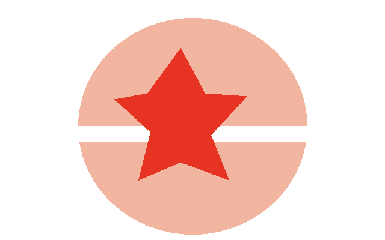

SIGNAL LOST · ERROR 404
UPS, IM NEON VERLAUFEN?
Diese Adresse führt ins digitale Nirgendwo. Die Musik läuft aber weiter: Komm zurück zur Startseite oder entdecke das Programm.

Wo geht es jetzt weiter?
Vielleicht hat sich ein Tippfehler eingeschlichen oder der gesuchte Link existiert nicht mehr. Über die Navigation erreichst du alle fünf Bereiche der Website. Für Infos zu Alter, Muttizettel und dem fiktiven Veranstaltungsort besuche die Infoseite.